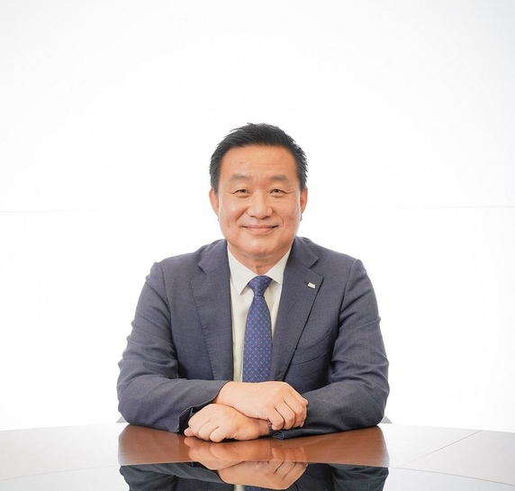

(사)한국정보처리학회
30대 회장 신년사

안녕하십니까!
2025년 한국정보처리학회 회장 황종성입니다.
올해로 32주년을 맞는 한국정보처리학회는 명실상부한 대한민국 ICT 분야 최고의 학회로 산 · 학 · 연 최고의 전문가들이 연구와 실무를 융합하여 발전하고 있는 글로벌 학회입니다. 학회 발전을 위해 헌신하신 선배님과 동료들의 노고에 깊이 감사드립니다.
오늘날 세계는 인공지능이 정치, 경제, 사회, 문화 전반에서 디지털 혁신을 촉발하는 지능정보사회로 진입하고 있습니다. 2025년은 인공지능(AI), 양자컴퓨팅, 그리고 디지털 전환이 본격적으로 우리의 삶과 산업을 혁신적으로 변화시키는 중요한 한 해가 될 것입니다. 한국정보처리학회가 지속적인 연구와 협력을 통해 새로운 기술들에 대한 국가와 산업의 역량을 더욱 발전시키고 시대 변화를 선도해 나가야 할 때입니다.
올해는 우리 학회의 장점인 산 · 학 · 연 전문가들이 참여하는 연구회 활동과 주요 행사의 활성화를 통해 학회의 발전을 이루고자 합니다. 학회의 활성화를 위해 연구회는 실제 산업에 적용할 수 있는 사례를 다루고 미래 발전방향을 제시할 연구를 수행하여야 합니다. 이를 위해 연구회별로 지속적인 학술 교류와 이벤트를 수행할 수 있도록 지원하겠습니다. 학회 최대 행사인 ASK 2025와 ACK 2025는 물론 IT21 글로벌 컨퍼런스, AICompS 2025가 성공적으로 개최될 수 있도록 많은 관심 부탁드립니다.
한국정보처리학회는 회원 여러분을 적극 지원하고 지회와 본부, 분야별 위원회와 협력하여 명실상부한 대한민국 최고의 산학연 네트워크가 될 수 있도록 노력하겠습니다.
감사합니다.